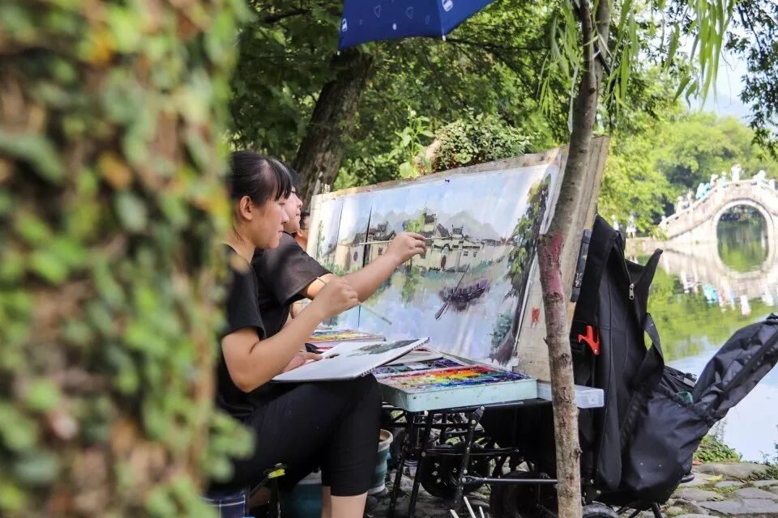
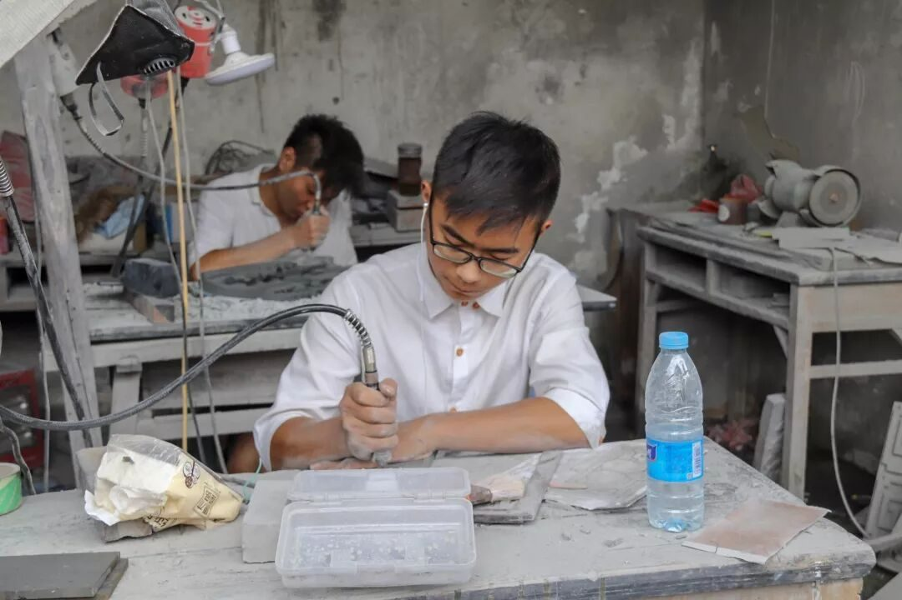

【素笺寄情·八】未来可期


【素笺寄情·八】未来可期

宏村-一幅活的水墨画
为了前往黄山的第一站宏村，我们坐上了老式售票汽车在颠簸了近一小时的盘山公路后才终于到达了目的地。路上的辛苦甚至让我还未到宏村便对其产生厌恶的的第一印象。但是当我们从那窄窄的入口走进真正的宏村后，一切都不重要了。身为摄影组的成员这是我举起相机按下快门次数最多的一天。我以为徽文化是单调的枯黄色，除了水墨宣纸我实在是想不到别的色彩了。但是在宏村，我见到了如在家乡般的流水落花以及半亩荷塘，但比家乡更多的是这里还有平原所不见的山在远处交相辉映。老树的枝条贴着水面向前延伸，荷塘的对面是古典的徽派民居，中间用一抹石拱桥相连。拱桥左边是倒映着民居的水面，把相机倒过来，这便是两个世界；拱桥右边是粉黛初绽的荷塘，像是典型的江南女子，用一把油纸伞半掩着，羞赧欲滴。再加上塘边写生的人们，这便是一幅活脱的水墨画，一幅活的水墨画。
初识的惊艳终究还是被浓重的现代化气息所打破了，当我们走进徽派民居后，扑面而来的不是古村落的传统与静谧，而是商业街的吆喝与宣传。当地小饰品摊上我见到的最多的竟是指尖陀螺，与老派民居的格格不入让我感到不适，这终究还是被金钱所污染了，失去了了其本真的样子。

惜传统工艺
黄山的第二站我们来到了歙县，采访徽州石雕大国工匠方新中老师。虽贵为大国工匠，但方老师对我们这些普通的到访者却毫无一点点架子，相反的，十分热情好客。在短短一小时的采访过程中，方老师对我们的问题进行了一一解答还带我们参观了整个砖雕制作流程。一个七十岁的老人本该到了颐养天年，含饴弄孙的年龄，却仍坚守在砖雕艺术技艺的第一线。一方面是匠人心态的自我修养，而另一方面我们也看到了徽州石雕的后继无人。
大部分的手工劳动已经被轰鸣的机器所取代，留下的那些必须要亲身例行的传统工艺却因利益的原因逐渐被社会淘汰。文化终究是人的文化，没有人来传承，文化总会走到消亡殆尽的那一天。试想几十年后我们的子孙后代只能在博物馆和历史资料中了解到中国竟还有如此精湛的手工艺，是一件多么可悲的事情。
六天的行程很快，只一瞬就从指尖溜走了。不舍得不仅仅是那徽州古城的传统人文，更是行者15人的大家庭。我相信文化不是一场短途旅行，其更像是一幅从古至今不断发展的卷轴，行者无疆也是如此，每一次的结束都预示着送走一批人，迎接一批新鲜的血液，过程是镇痛的，结果是美好的。到了说再见的时候，行者无疆，未来可期！
图片｜沈华，盛暘
文案｜沈华
排版｜潘雯雯
审核｜应雨珊，潘雯雯
长按扫码关注我们